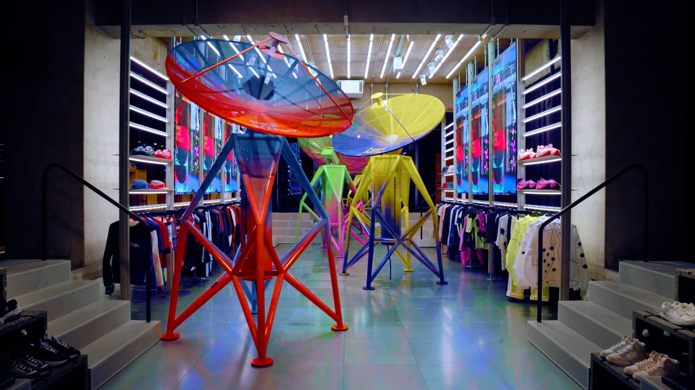

NIKELAB RADIO*_installation_at MA5
Installation direction and design: Kazuhiko Hayakawa
Sound design: Tatsuya Yamada (ttymd.com)
Programming: Yusaku Kimura, Yuta Morofuji
System development: Yusaku Kimura / Yuta Morofuji
Movie design: MESS / Kairi Sato / Shun Yamaguchi
Produce: Tetsuro Shinoda
Sound produce: Yohei Fujii
Planning support: Masahide Matsuda / Masanari Muramoto
Project assistant: Ippei Fukuda
Production: CEKAI / CANOPUS / MS Bisou / STAMP TOKYO / PANDA STUDIO